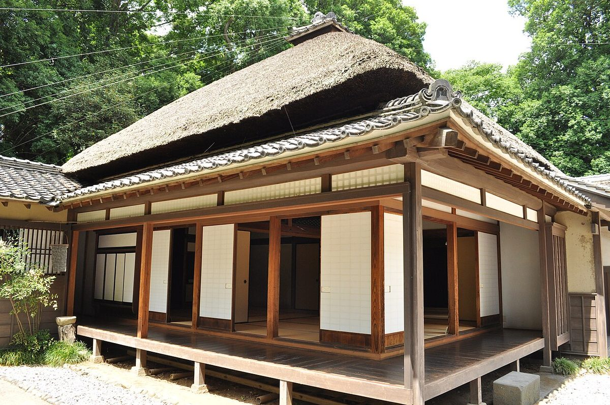
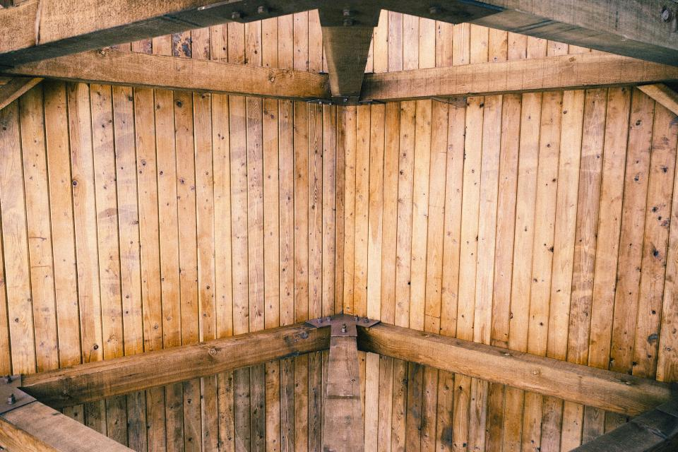
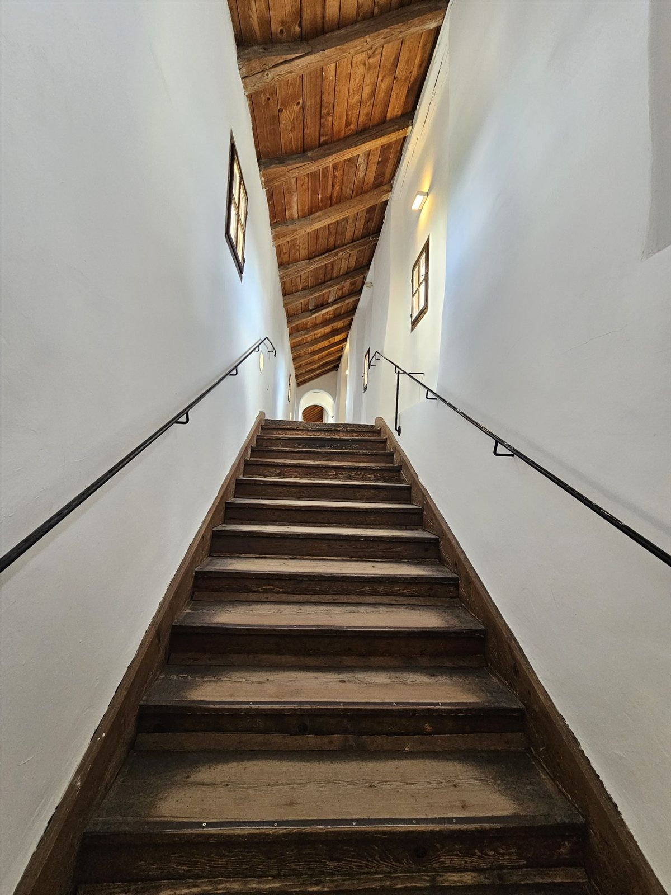
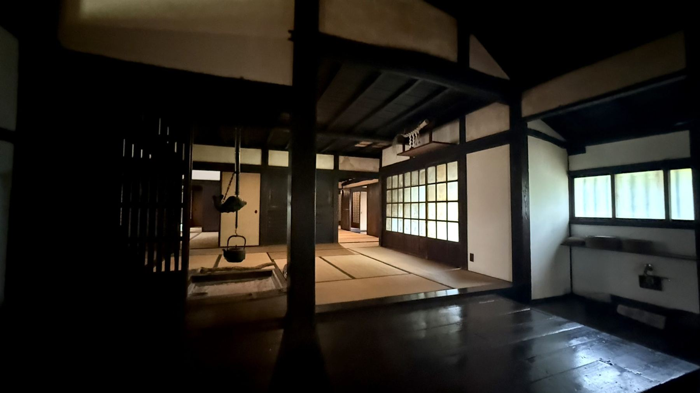

住まいが変わる、その前と後
古い家がどのように姿を変えるのか。施工事例のページでは、ビフォーとアフターを並べてご紹介します。手を入れる箇所と残す箇所、その考え方もあわせてご覧ください。

Before イメージ After イメージ
After イメージ同じ物件ではありません(イメージ)
施工事例を見る素材のはなし
木の選び方
使う場所の役割に合わせ、木の性質と表情を見比べて選ぶ方針です。
乾かし方
木が落ち着くまで、急がずじっくりと乾かすことを大切にしています。
仕上げ方
木肌のぬくもりを損なわないよう、素材に合った仕上げを選びます。
お客様の口コミ
イメージ例
家づくりの打ち合わせでは、こちらの話を最後まで丁寧に聞いてもらえました。漠然とした希望も少しずつ整理でき、納得しながら一つずつ間取りを決めていけたのが、とても心強かったです。
30代・ご夫婦(注文住宅)
口コミをもっと見る家のこと、まずはお話をお聞かせください。
新築、リフォーム、古い家の再生など、お考えの段階でも構いません。お気軽にご相談ください。